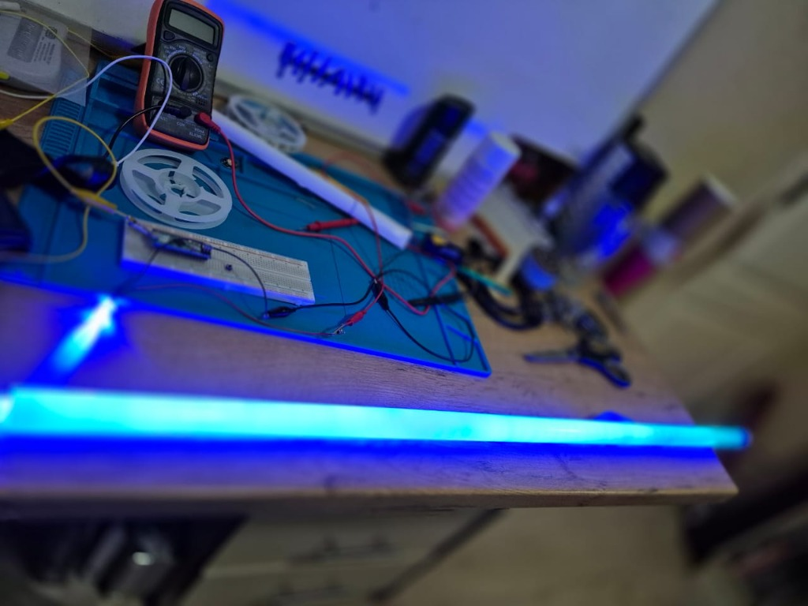

I can optimize distributed caching layers, build multi-threaded database indexers, and architecture RESTful microservices all day without breaking a sweat. But hand me a 400°C soldering iron and a soundboard the size of my sanity (smol), and suddenly I am sweating through my shirt.
As a lifelong Star Wars fan, I always wanted a screen-accurate, high-end lightsaber. But buying one pre-built felt like cheating. I wanted the full Jedi trial: I wanted to assemble it myself. The catch? My knowledge of electrical hardware was pretty much limited to "don't stick forks in wall sockets."
The Components: Choosing My Kyber Crystal
I spent weeks researching the saber hobby community (ruining several innocent components). I quickly realized that building a modern lightsaber is essentially building a highly specialized, motion-tracking embedded system. I settled on the following components:
- The Hilt: A premium, hollow aircraft-grade aluminum hilt with an internal chassis.
- The Brains (Proffieboard v2.2): A highly customizable open-source soundboard powered by an ARM processor, capable of real-time smooth-swing motion detection.
- The Blade (Neopixel LED Strips): Instead of a single LED in the hilt, Neopixel blades have hundreds of individually addressable RGB LEDs running up the blade, allowing for scrolling ignition effects.
- The Power: A high-drain 18650 Lithium-Ion battery capable of supplying up to 15 amps of current (enough to melt wires if miswired!).
The Tinkering Stage: Overcoming the Soldering Iron
Wiring a Proffieboard requires working with extremely tight pads. We are talking fractions of a millimeter here. My initial attempts at soldering were, to put it gently, a disaster. Cold joints, solder blobs bridging critical data lines, and wires melting from leaving the iron on the pad for too long.
But software engineering taught me one vital skill: debugging. I bought a multimeter and tested continuity on every single connection before applying power. I realized that like writing code, hardware requires patience, modular testing, and reading the documentation (extensively!).

My actual prototyping bench: High-stakes spaghetti wiring, a digital multimeter (which saved me thousands of bucks in blown components), a temporary breadboard circuit, and the glowing blue Neopixel blade tube lighting up the workbench.
Before packing the delicate electronics inside a slim aluminium hilt, I went through a relentless prototyping phase. I spent nights swapping out various microcontrollers, testing different high-density addressable Neopixel LED strips, and double-checking currents. In the photo above, you can see one of those initial breakout tests: a glowing blue polycarbonate tube hooked up to a temporary breadboard circuit on a heat-resistant silicone workbench mat, with my trusty multimeter checking for ground faults. This was the exact sandbox where all of the structural hardware logic got validated.
The Turning Point: It's Alive!
After a week of precise wiring, heat-shrinking joints, the occasional singeing of hair, and packing the fragile electronics into a custom 3D-printed chassis, the moment of truth arrived. I loaded the custom C++ firmware configurations onto the Proffieboard, slipped the high-drain battery into place, and pressed the auxiliary button.
"Font Directory Not Found." A tiny voice spoken from the 28mm bass speaker echoed in my room. It wasn't the ignition hum I wanted, but it meant the CPU was alive, the speaker was working, and the board wasn't fried! I quickly realized I formatted the MicroSD card incorrectly. After a swift fix, I pressed the power button again.
A crisp, high-fidelity ignition hum surged from the hilt, and a brilliant blue light scrolled up the blade with flawless fluid motion. As I swung it through the air, the pitch fluctuated perfectly in real-time, matching my movements with absolute precision.
My Key Takeaways
- Embrace the Tinkerer Mindset: It is incredibly rewarding to step completely outside your comfort zone. Not knowing how to do something shouldn't be a barrier; it should be an invitation to research, fail safel (i.e. all limbs intact), and learn.
- Hardware is Unforgiving but Satisfying: In C#, I can refactor a bad class instance in seconds. If you solder a battery backward, the board is toast. This stakes-heavy environment forced me to develop a higher level of discipline and attention to detail.
- Tinkering Feeds Creativity: Building a physical product gave me a refreshed perspective on software design. It reminded me that the clean abstractions we use in high-level coding are all ultimately translating down to raw voltages, microcontrollers, and physics.
The Verdict
Building a custom lightsaber was a brilliant, frustrating, and ultimately thrilling side quest. It proved to me that with enough research, patience, and a healthy fear of lithium fires, a backend engineer can successfully transition into a passable hardware tinkerer. Plus, I now have a glowing plasma sword sitting next to my monitor. Highly recommended.